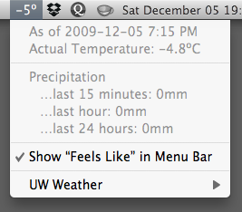

Weather info direct from the University of Waterloo weather station to your Mac OS X menu bar. By Nolan Waite.
Download UW Weather — for Mac OS X 10.6+
Version 2.0.5, released March 24, 2010. See changelog.

A screenshot of UW Weather in action.
Download UW Weather 1.2.4 for Mac OS X 10.4+
This version is no longer maintained.
The source for UW Weather is at GitHub (nwaite/uwweather).
Questions, comments, feedback, bugs? Email nolan at nolanw.ca
Application © 2010 Nolan Waite. Icon © 2008 xiao4.deviantart.com